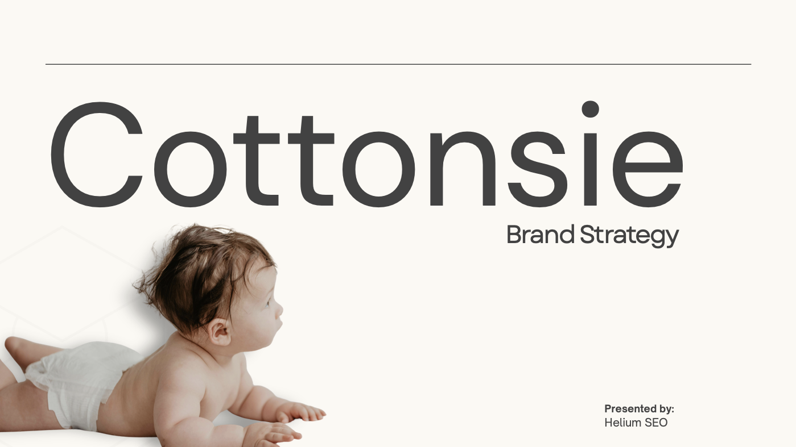
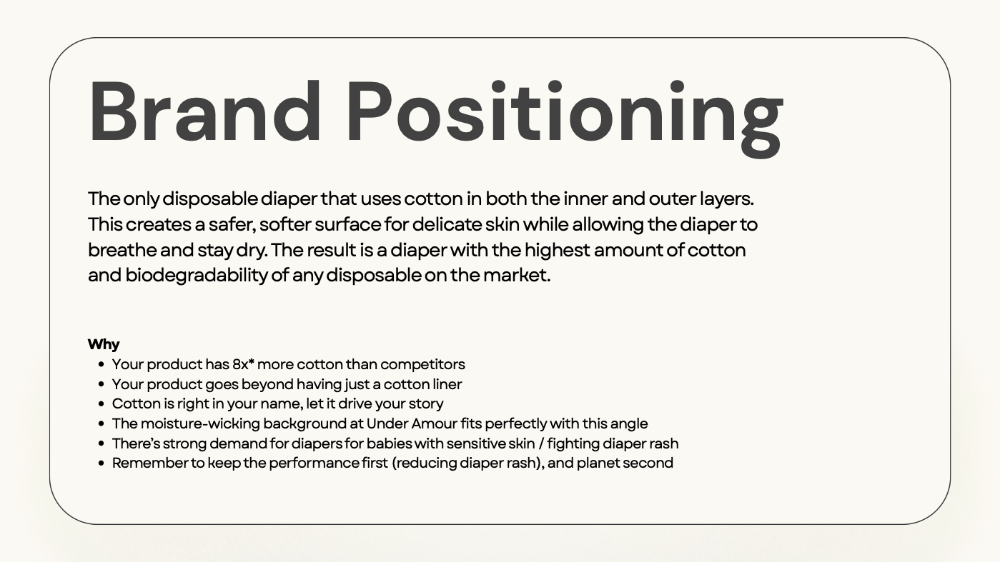
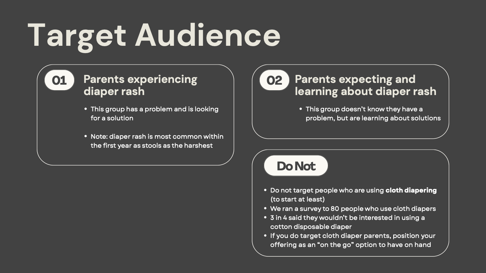
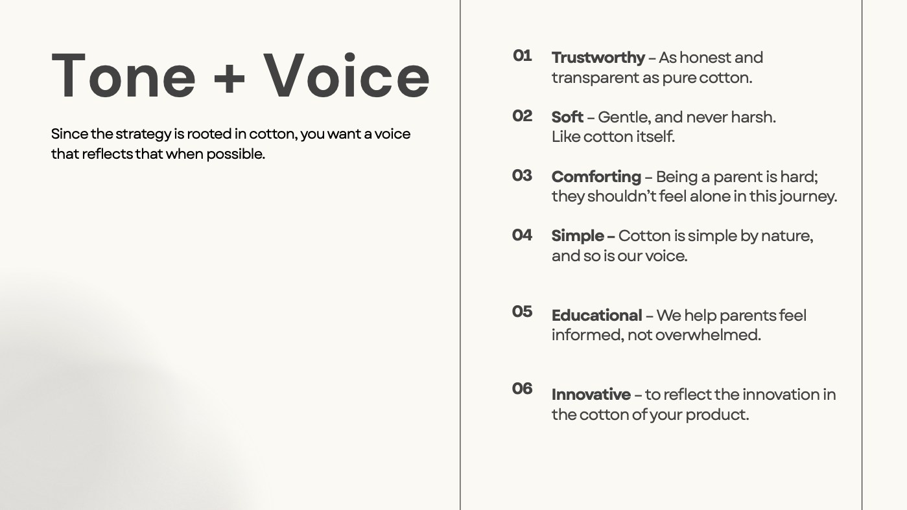
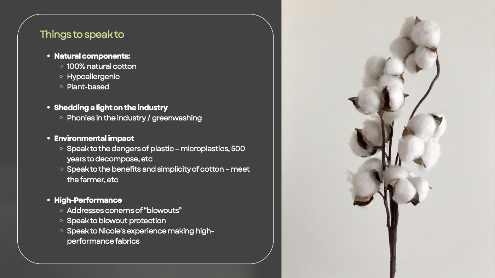

The first and only 100 percent cotton-lined diaper, competing against giants, with no story told.
My role: Led the brand strategy, discovery to visual direction.

The first and only 100 percent cotton-lined diaper, competing against giants, with no story told.
Competitive analysis and customer research.
New parents make 2,000-plus Google searches in their first year, and skin sensitivity tops the list. The cotton wasn't a feature, it was the answer to the number 1 search.
Position on cotton, voice like cotton: trustworthy, soft, comforting, never "science-y."



